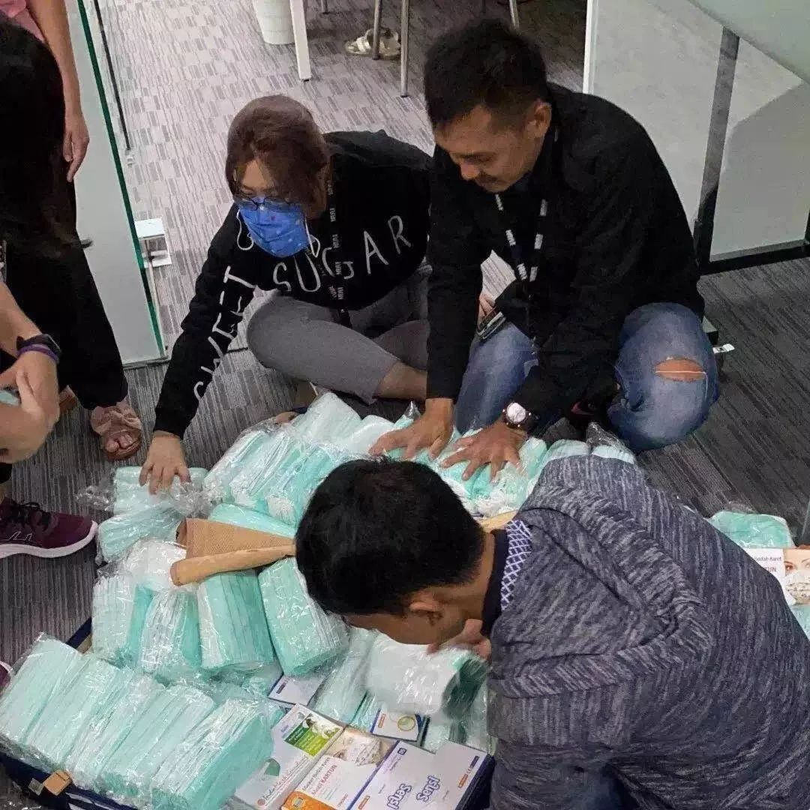
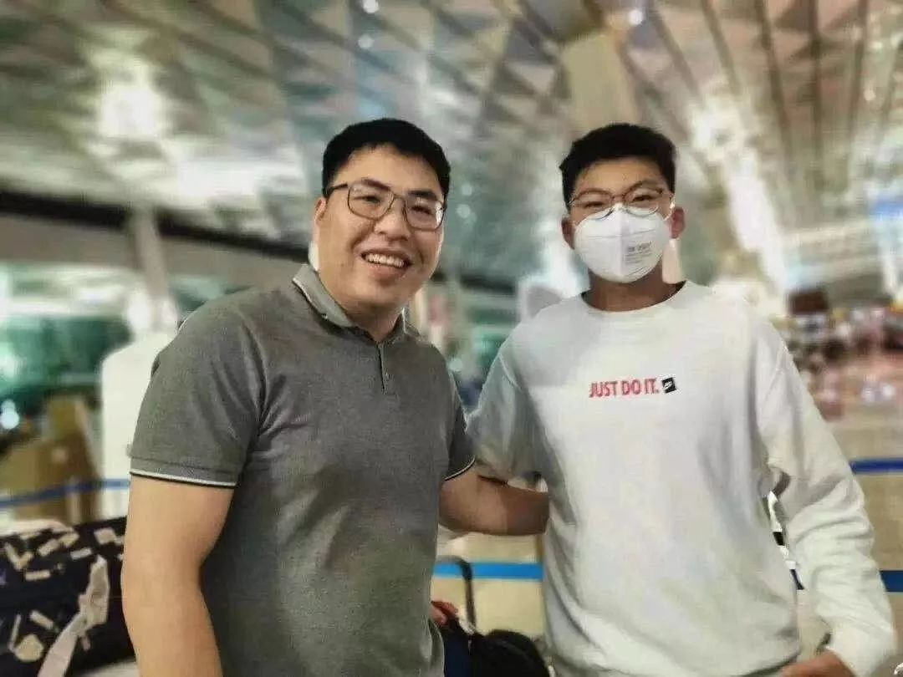

WH日记2
原文链接 备份链接 三、暖心 整个广东医疗队大部分成员都是在2月9号凌晨到2点之间被确定参加援鄂医疗队，8点就要整装出发，所以不仅是个人的生活物资，医院准备的医疗物资都难以在这么短时间内备齐，这导致很多地市的医疗队都是带着点生活用品就匆匆 …
澎湃新闻记者 李菁 韩晓蓉
1.5万只口罩，年仅15岁的他，在无人愿意“冒险”的情况下，只身一人，带着5个重重的行李箱，从印尼“人肉”背回了国内。
最近，上海市民办新黄浦实验学校八（2）班学生赵珺延“火了”，教师、同学、亲朋好友还有网友们纷纷为他这位抗疫小英雄的义举点赞：“自古英雄出少年”“好样的孩子”“学习的榜样”……
赵珺延和家人向澎湃新闻(www.thepaper.cn)记者表示：“国家有难，匹夫有责！我们只是做了作为普通中国人应该做的事。”

赵珺延从印尼收集的口罩。 本文图片均为上海黄浦区供图
主动请缨担任“口罩搬运工”
1月份放寒假了，在印度尼西亚雅加达工作和生活的舅舅游和洲，邀请赵珺延去当地度假。
1月18日，赵珺延从上海坐飞机飞往雅加达，打算开始他的寒假之旅。然而到达当地没有几天，就传来国内新冠肺炎疫情的消息，也影响到了他们的家乡温州苍南。
作为一名旅居海外的华侨，游和洲心系祖国和家乡，为在第一时间抢购口罩，他放下原本的外贸生意，组织员工以最快的速度紧急搜集苏门答腊岛、爪哇岛、苏拉威西岛、加里曼丹岛等岛内的医用口罩，1月23日起，仅用两天时间，就收购了2万多只口罩，准备捐给家乡的温州市苍南县人民医院。
收购的口罩整装待发时，他们碰到了难题：因为运费极其昂贵，最好是有人坐飞机带回国内，但面对此时疫情形势严峻的中国，当地无人愿意担此重任。
正一筹莫展之际，赵珺延提出：“舅舅，让我来吧。我坐飞机运回中国去。”
舅舅游和洲有些迟疑，当时国内疫情形势日益加重，开学也延期了，此前自己因为忙于搜集口罩，还没空带外甥游玩。
赵珺延的妈妈也因为开学延期而更改了机票时间，希望孩子在雅加达多待一段时间，2月10号后再回国。
赵珺延和妈妈通话：“我已经是中学生了，我是中国人，这个困难时刻，尽我所能为国家出力，为家乡做点事，义不容辞。”
妈妈游小敏被儿子打动了，虽然有些担心，但更多的是对小小男子汉的信任，2月2日印尼政府发布通知2月5日12点开始关闭中国往返的所有航班，时间紧急，游小敏赶紧帮儿子抢回国机票，终于抢到了一张2月3日23点的机票，事后才知道，这已是目前印尼飞往中国的最后一架航班。

赵珺延和舅舅
带回五个行李箱1.5万只口罩
为了将尽可能多的口罩运送回国， 赵珺延撕去口罩包装以减少占用空间，1.5万只口罩被硬生生地挤入5个24寸行李箱。5个行李箱是他所能承受的最大运输力量。
在舅舅的帮助下，赵珺延托运了这5个24寸行李箱，独自一人踏上返乡的航班。
2月4日早上7点，赵珺延抵达上海浦东国际机场。过海关的时候，腼腆的他找到几个好心人帮他一起出了关。本来他打算守着行李箱，然后给快递公司打个电话，快递员会来直接把货物拉走。可是工作人员告诉他，要自己把货物拉到机场的预定集合地。他立刻取出手机查定位，距离目的地有500多米。
面对着5个大箱子，赵珺延很为难……最后，他找来两辆推车，将5个箱子搬上了车，一鼓作气推起了两辆推车，可是总有一个箱子不听话，不停地往下掉。他只能推一辆走一段，再回去推另一辆……就这样，500多米的路程足足走了半个小时，5个行李箱终于成功搬运到了机场外围。
赵珺延第一时间联系了快递速运，2小时后，这批物资终于奔向了家乡苍南。

装满了口罩的行李箱
新黄浦实验学校老师告诉澎湃新闻记者，赵珺延是该校八（2）班的班长，是一个品学兼优的好学生，平时乐于助人，很受小伙伴们的信赖，他一直以来都勇敢有担当，这一次只身从海外“人肉”背回口罩，也是意料之中的事。非常时期，15岁上海好少年上演了一出“千里走单骑”，大智大勇的故事成为了学校进行责任教育的好素材，学校已将赵珺延的事迹在同学中进行了传播，希望更多的同学以他为榜样，心系祖国，勇于担当。
戳这里进入
“全国新型冠状病毒感染病例实时地图”↓↓↓

本期编辑 周玉华
推荐阅读


原文链接 备份链接 三、暖心 整个广东医疗队大部分成员都是在2月9号凌晨到2点之间被确定参加援鄂医疗队，8点就要整装出发，所以不仅是个人的生活物资，医院准备的医疗物资都难以在这么短时间内备齐，这导致很多地市的医疗队都是带着点生活用品就匆匆 …
原文链接 备份链接 “很多人以为，医护人员看惯了生死离别，内心麻木了，也就不会再被同情心和情绪所困扰，这其实是一种误解。” 配图 | Sipa图片社 前 言 这是一场战争，在新年的伊始，爆发在每一个普通的、平凡的中国人身边。 这是我们的 …
原文链接 备份链接 记者：刘睿欣 “ 颇为讽刺的是，一周前（2月4号），也就是被捕的前一天，黄智博还在微博发布手写信，支援奋战在抗疫一线的工作者，表示“我们同心协力打赢这场战疫，武汉加油！中国加油！”这也是黄智博迄今为止发布的最后一条微 …
原文链接 备份链接 疫情防控“全国一盘棋”的关键时刻，各地政府应该在用工、原材料、物流等环节最大程度地给口罩企业提供支持，绝对不能画地为牢。 2月11日，工作人员在位于重庆市南岸区的宏冠医疗设备有限公司口罩生产包装车间内作业。作者：王全 …
原文链接 备份链接 *************▲*************1月29日，钱珵戴着用文件袋改装的面罩，在医院抽完血后自拍。 （受访者供图/图） 全文共4492字，阅读大约需要10分钟。 这次疫情有影响到我最近写剧本的内容， …